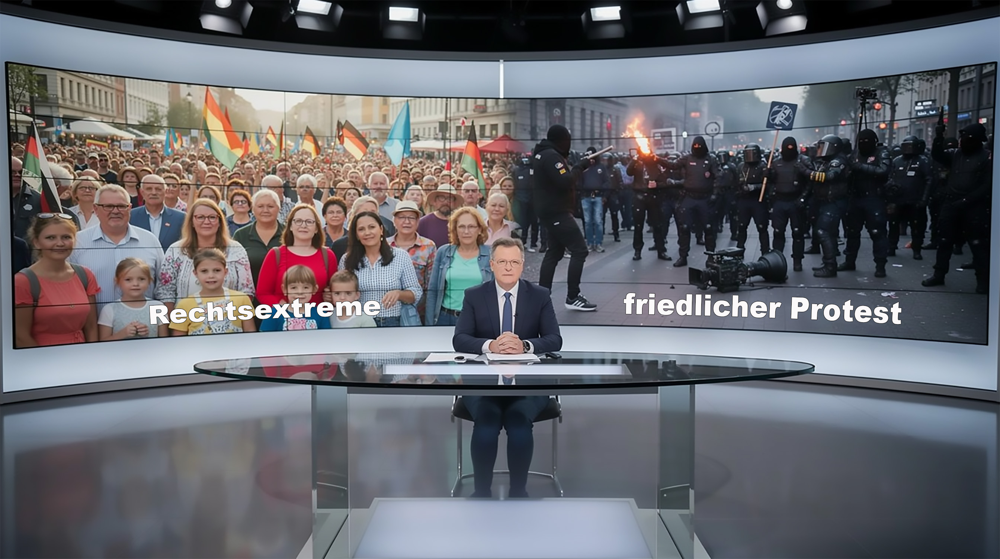

10.000 – zuerst das Etikett

In Plauen demonstrieren rund 10.000 Menschen friedlich gegen die Bundesregierung. Beim Spiegel erfahren die Leser trotzdem zuerst, welches Etikett für die Menge vorgesehen ist: „Rechtsextreme Teilnehmer“.
Gefordert werden niedrigere Energieabgaben, ein bundesweites 29-Euro-Ticket, konsequentere Abschiebungen und eine Reform des öffentlich-rechtlichen Rundfunks. Der Gebührenfunk berichtet hier über Menschen, die seine Finanzierung, Größe und politische Macht infrage stellen.
Die Freien Sachsen hatten ebenfalls zur Teilnahme aufgerufen. Ihre Anwesenheit genügt, um den ersten Eindruck über 10.000 Demonstranten festzulegen. Forderungen und friedlicher Verlauf verschwinden hinter der politisch brauchbaren Teilgruppe.
Während der Corona-Jahre lief dasselbe Spiel: Familien mit Kindern und friedliche Demonstranten gingen gegen staatliche Maßnahmen auf die Straße. Für den medialen ersten Eindruck genügten die anwesenden Rechtsextremen und Reichsbürger.
Wie schonend der ÖRR formulieren kann, zeigte sich beim AfD-Parteitag in Erfurt. Die Tagesschau titelte: Protest gegen die AfD „überwiegend friedlich“.
Zu diesem Zeitpunkt hatte die Polizei 65 Straftaten und 13 Ordnungswidrigkeiten erfasst, darunter Körperverletzungen und Sachbeschädigungen. Später stieg die Zahl der untersuchten Straftaten auf 74. Reporter wurden bedrängt, beleidigt, geschlagen und getreten. Ein weiterer Pressevertreter wurde geschlagen und seines Mobiltelefons beraubt.
Trotzdem blieb es „Protest“. In Plauen läuft es umgekehrt: Alles bleibt friedlich, doch die unerwünschte Teilgruppe bestimmt die Wahrnehmung.
Mehr dazu: Blockade gefeiert, Presse verprügelt.